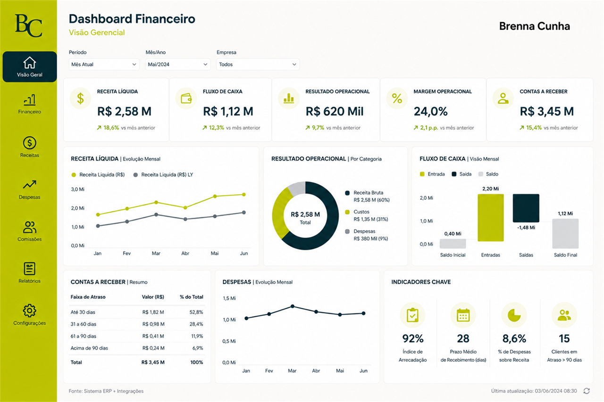
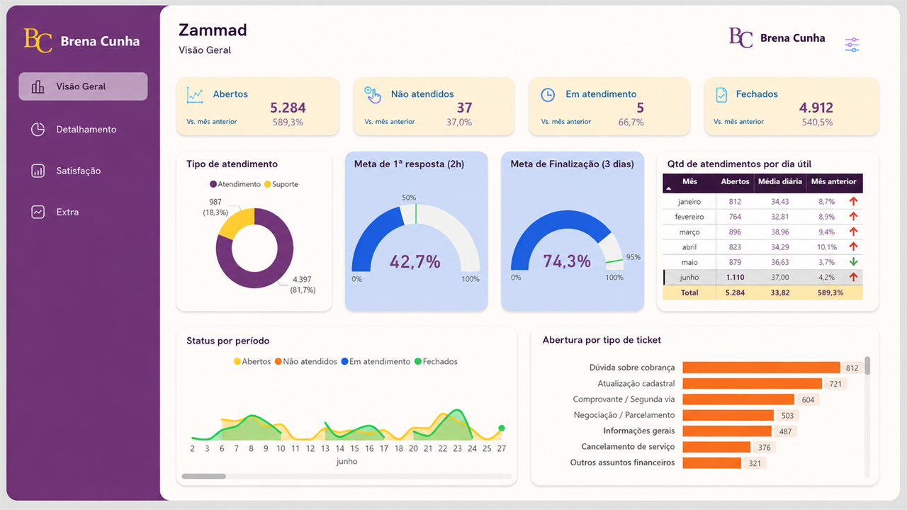

Brenna Cunha
ESPECIALISTA EM FINANÇAS |
ESTRATÉGIA | MELHORIA CONTÍNUA |
POWER BI | LIDERANÇA
Atuação voltada para gestão financeira, indicadores, melhoria contínua e estruturação de processos, conectando dados e decisões para geração de resultados.
Uma trajetória construída entre finanças, estratégia e evolução operacional
Profissional da área financeira com atuação em gestão operacional, indicadores estratégicos, melhoria contínua e estruturação de processos. Experiência conectando dados, eficiência operacional e tomada de decisão para apoiar crescimento e geração de resultados.
Gestão Financeira & Estratégia
Fluxo de caixa, tesouraria, indicadores e suporte à decisão
Indicadores & Performance
KPIs, dashboards e análises para acompanhamento do negócio
Transformação & Processos
Padronização, automação e melhoria contínua
Power BI & Automação
Dashboards, análises financeiras e automação aplicada à gestão
Liderança & Desenvolvimento
Liderança, desenvolvimento de pessoas e padronização operacional
Eficiência & Crescimento
Processos estruturados para apoiar expansão e resultados
Minha jornada na área financeira
Uma trajetória construída entre finanças, indicadores, melhoria contínua e liderança, evoluindo da operação para a atuação estratégica.
Assistente Financeiro
Conciliadora
Início da trajetória financeira com atuação em faturamento, conciliações, contas a pagar e receber, estruturação de controles internos e apoio à implantação de sistemas e processos financeiros.
Coordenadora Financeira
Conciliadora
Evolução para atuação estratégica com gestão financeira, Budget, Forecast, dashboards, automação e estruturação de indicadores para suporte à tomada de decisão.
Analista Financeiro Pleno
Pontotel (remoto)
Atuação voltada para gestão de carteira, melhoria operacional, indicadores financeiros, otimização da cobrança e eficiência dos processos.
Líder Financeiro
Pontotel (remoto)
Liderança das operações financeiras, estruturação de processos, indicadores estratégicos, automações e iniciativas voltadas à escalabilidade.
TRANSFORMAÇÃO & IMPACTO
Experiência construída entre gestão financeira, indicadores, melhoria contínua e liderança, apoiando decisões e evolução operacional
- Indicadores e tomada de decisão
- Estruturação e melhoria de processos
- Liderança e desenvolvimento operacional
Projetos que impulsionaram resultados

Business Intelligence para Gestão Financeira
Dashboards e indicadores financeiros para ampliar visibilidade dos resultados, apoiar análises e fortalecer a tomada de decisão.
VER PROJETO
Recuperação Financeira e Gestão da Cobrança
Processo, régua de cobrança, dashboards e indicadores para recuperação financeira com mais previsibilidade operacional.
VER PROJETO
Implantação do Atendimento Financeiro e Gestão Operacional
Implantação de chamados, fluxos operacionais, SLA, dashboards e indicadores para organizar a gestão financeira.
VER PROJETO
Aberta a oportunidades
Experiência em gestão financeira, indicadores estratégicos, melhoria contínua, automação e estruturação de processos, com atuação voltada para eficiência operacional e geração de resultados.
VAMOS CONVERSAR?FINANÇAS
Gestão financeira, indicadores e suporte à tomada de decisão.
PROCESSOS
Padronização, melhoria contínua e eficiência operacional.
LIDERANÇA
Desenvolvimento de pessoas, organização e resultados.